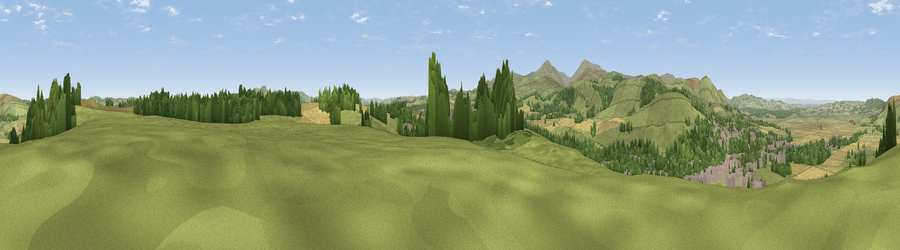

Viewpoint near Wooler
#14029 in England · top 49% of its area beats it · near WoolerWhere it is
The exact computed spot (NU 00525 27425). Click the marker for map links.
The view, rendered

A 360° render of this exact spot computed from the terrain model, tree cover and land cover — summer colours, afternoon light, calibrated against photographs of famous viewpoints. Real trees, hedges and buildings will differ in detail.
The panorama
Grey silhouette: terrain skyline in each direction (720 bearings, Earth curvature and refraction included). Dashed green: skyline with trees (+15 m) and buildings (+8 m) as obstacles. Blue strip: how far the ground is visible on each bearing.
Where the view opens
Wedge length = distance to the farthest visible ground on that bearing (vegetation-aware). Rings at 10, 25 and 50 km.
What fills the view
60% grassland · 20% cropland · 15% woodland · 5% built-up
Angular shares of the visible panorama (visual magnitude), not map area. Landscape diversity 0.46 (0–1 Shannon).
Key numbers
More beautiful places nearby
The staircase of upgrades: each row has a higher view potential than everything closer. Driving times are estimates from straight-line distance, calibrated against real road routing — check an actual route before setting out.
| Place | Direction | Drive | Score |
|---|---|---|---|
| Viewpoint near Wooler | NNE · 1 km | ~2 min | 65.5 |
| Humbleton Hill | WNW · 4 km | ~9 min | 82.5 |
| Viewpoint near Kirknewton | WNW · 8 km | ~16 min | 86.1 |
| Viewpoint near Chillingham | ESE · 8 km | ~16 min | 88.1 |
| Ullock Pike | SW · 124 km | ~149 min | 89.4 |
| Long Side | SW · 124 km | ~149 min | 89.5 |
| Viewpoint near Easington | SE · 130 km | ~154 min | 90.2 |
| The Knoll | S · 541 km | ~488 min | 91.0 |
55.54054, -1.99324 · source: screening · position refined by local search. Computed location — check access rights before visiting.